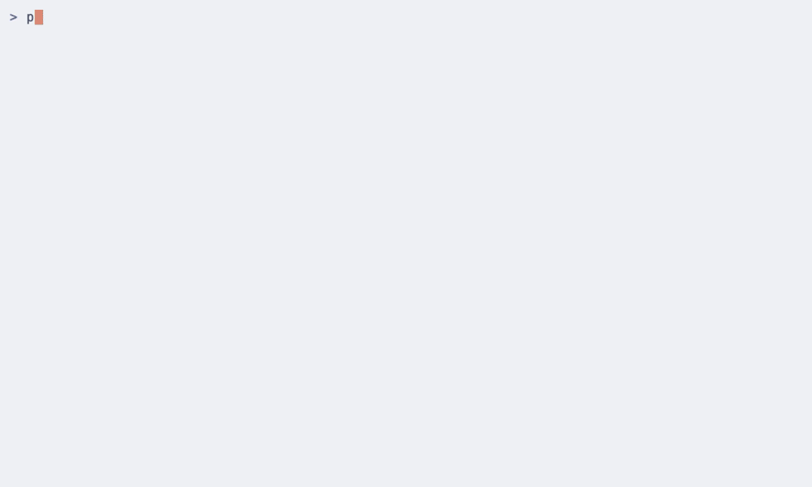

Your markdown has to leave home. Keep track of it.
penknife is a terminal home for a folder of markdown: browse it, search it, hand any file to anyone as clean rich text. When a copy lives on as a gist, know at a glance which side has drifted.
curl -fsSL https://heider.cc/penknife.sh | bashbrew install jhheider/tap/penknifecargo install penknifeThe tour
One folder, at your fingertips
Point it at an Obsidian vault, a notes directory, anywhere
you keep .md files. Browse the tree, preview
any file rendered, and full-text find across everything -
all before you've signed into anything. Once files have
gists, each shows its sync state, verified by content
hash, not timestamp.

The real thing, recorded against the released binary:
browse, preview, and find across a folder.
pShare, without an account
Renders the file to HTML and puts it on your clipboard as rich text. Paste into Google Docs, email, Slack, or Notion, with headings, tables, bold, and links intact. A deliberate snapshot; nothing to track, nothing to sign into.
zero setupuSync, when you want it
Publishes the file as a GitHub Gist and treats it like a git remote: penknife records what was pushed, notices when either side moves, and shows the drift per file. The folder stays primary.
opt-in, per fileScriptable
The same tools, headless
Every core verb works without the TUI, with disciplined exit codes and machine-readable output - stdout is the payload, stderr is for humans - so penknife slots into pipes, hooks, and CI.
$ penknife render -s notes.md > notes.html # markdown → full HTML doc $ penknife search "Rust" # grep your whole folder ./posts/rust-is-not-the-devil.md:1:# Rust is Not the Devil, Nor the Messiah ./posts/rust-is-not-the-devil.md:3:Rust is a tool, a powerful, occasionally $ url=$(penknife push posts/edikt-launch.md) # publish; stdout is the URL $ penknife status -q || echo "something drifted" # exit codes are the API
Also in the drawer
Small surface, sharp edges
-
Full-text search across every file
(
f), and find-and-replace across a folder with per-change review (s). -
Preview with syntax highlighting, open
in
$EDITOR(e), fuzzy file jump (/), paste your clipboard straight into a new file (V). -
Diff local against remote
(
D), pull gist changes down (d), link or import existing gists (L,I). -
Git-aware: a git menu (
g) when your folder is a repo, plus sort, bulk actions, and per-key shell aliases in config. - Local-first by principle: sync is opt-in per file and never mutates your folder behind your back.
Why it exists
A gist you share is a copy you can lose track of
You write in markdown, in a folder you own. But your writing has to leave that folder: a gist link in Slack, a doc for a colleague, a post on a blog. Which version is current? Did someone edit the shared one? You can't tell without opening each destination and eyeballing it.
penknife treats each published gist like a git remote: it records what was pushed, notices when either side moves, and shows the drift per file. The folder is primary; the gist is a downstream copy.
And when the destination isn't a gist at all (a manager's Doc, an email, a Slack message), penknife hands you the writing as rich text to paste: a deliberate snapshot with nothing to track. Two jobs, kept separate on purpose.
It is not a backup tool, not an editor, and not an Obsidian plugin. It's the missing seam between the folder where you write and the places your writing ends up.